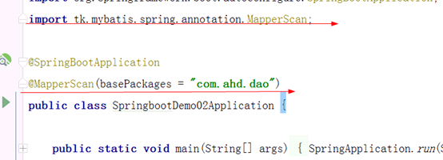
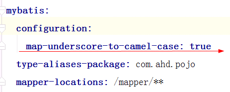
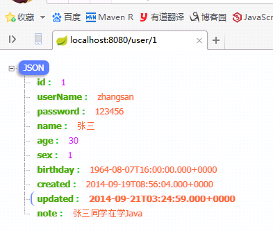

SpringBoot_02通用mapper原文出处:本文由博客园博主爱华顿g提供。
原文连接:https://www.cnblogs.com/aihuadung/p/11592765.html
注意:一旦引入了通用Mapper的启动器，会覆盖Mybatis官方启动器的功能，因此需要移除对官方Mybatis启动器的依赖。
无需任何配置就可以使用了。如果有特殊需要，可以到通用mapper官网查看：https://github.com/abel533/Mapper/wiki/3.config
通用mapper不需要dao层的xml文件,只需要dao层的接口继承Mapper接口
总结使用步骤
整合通用mapper的使用：
第一步： 如果使用通用mapper就需要把mybatis的依赖和配置全部去掉 包括jar、xml、引导类上的mapperScan
第二步：添加通用mapper的启动器
<dependency>
<groupId>tk.mybatis</groupId>
<artifactId>mapper-spring-boot-starter</artifactId>
<version>2.1.5</version>
</dependency>
第三步：修改pojo实体类
在类名上添加一个注解@Table（name="表名"） 用于表和实体类的映射关系
在注解上添加一个@Id 表名是主键
第四步：修改dao，让Dao的接口继承一个父接口Mapper<T> ,默认就有了CRUD方法
第五步：修改Service实现类中dao的方法 userDao.selectByPrimaryKey(id)
一.和整合mybatis的区别
- 不需要编写xml文件,
- 更改引导类上的@MapperScan注解,改成通用mapper的
- 不需要在application.yml文件上对 通用mapper 进行配置
- dao层的接口需要实现Mapper<对应的实体类>接口
- 实体类需要使用注解告诉通用mapper谁是主键,该实体类对应的表是谁
二.通用mapper的使用
1. 导入启动器(坐标)
|
<!-- 通用mapper -->
<dependency>
<groupId>tk.mybatis</groupId>
<artifactId>mapper-spring-boot-starter</artifactId>
<version>2.1.5</version>
</dependency>
|
将通用mapper的坐标替换成mybatis的
完整坐标:
|
<dependencies>
<!--通过项目模板,已经自动配置上了springmvc启动器,lombok启动器和test启动器-->
<!--项目模板自动配置 开始-->
<dependency>
<groupId>org.springframework.boot</groupId>
<artifactId>spring-boot-starter-web</artifactId>
</dependency>
<dependency>
<groupId>org.projectlombok</groupId>
<artifactId>lombok</artifactId>
<optional>true</optional>
</dependency>
<dependency>
<groupId>org.springframework.boot</groupId>
<artifactId>spring-boot-starter-test</artifactId>
<scope>test</scope>
</dependency>
<!--项目模板自动配置 结束-->
<!--配置springboot整合mybatis 开始-->
<!--配置mybatis 开始-->
<!-- <dependency>
<groupId>org.mybatis.spring.boot</groupId>
<artifactId>mybatis-spring-boot-starter</artifactId>
<version>2.0.1</version>
</dependency>-->
<!-- 通用mapper -->
<dependency>
<groupId>tk.mybatis</groupId>
<artifactId>mapper-spring-boot-starter</artifactId>
<version>2.1.5</version>
</dependency>
<!--配置通用mapper 结束-->
<!--配置jdbc 开始-->
<!--spring中的jdbc连接和事务是配置中的重要一环，在SpringBoot中该如何处理呢？
我们只要找到SpringBoot提供的启动器即可：
-->
<dependency>
<groupId>org.springframework.boot</groupId>
<artifactId>spring-boot-starter-jdbc</artifactId>
</dependency>
<!--配置jdbc 结束-->
<!--配置mysql 开始-->
<dependency>
<groupId>mysql</groupId>
<artifactId>mysql-connector-java</artifactId>
<version>5.1.47</version>
</dependency>
<!--配置mysql 结束-->
<!--配置Druid连接池 开始-->
<dependency>
<groupId>com.alibaba</groupId>
<artifactId>druid</artifactId>
<version>1.1.6</version>
</dependency>
<!--配置Druid连接池 结束-->
<!--配置springboot整合mybatis 结束-->
</dependencies>
|
2.
在引导类上添加注解@MapperScan

注意导的包的路径
3.
编辑实体类
package com.ahd.pojo;
import lombok.Data;
import tk.mybatis.mapper.annotation.KeySql;
import javax.persistence.Id;
import javax.persistence.Table;
import java.util.Date;
@Data //lombok的注解,在工程编译时自动为实体类添加上get,set,...方法
@Table(name="tb_user") //告诉通用`mapper对应的数据库表的名字
public class User {
// id
@Id //告诉通用mapper 谁是主键
@KeySql(useGeneratedKeys = true) //开启自增主键回显功能
private Long id;
// 用户名
private String userName;
// 密码
private String password;
// 姓名
private String name;
// 年龄
private Integer age;
// 性别，1男性，2女性
private Integer sex;
// 出生日期
private Date birthday;
// 创建时间
private Date created;
// 更新时间
private Date updated;
// 备注
private String note;
}
|
4. application.yml配置文件
spring:
datasource:
type: com.alibaba.druid.pool.DruidDataSource
username: root
url: jdbc:mysql:///saas-export-96
password: 123456
driver-class-name: com.mysql.jdbc.Driver
#mybatis:
# configuration:
# map-underscore-to-camel-case: true
# type-aliases-package: com.ahd.pojo
# mapper-locations: /mapper/**
|
5. 编写dao层接口
package com.ahd.dao;
import com.ahd.pojo.User;
import tk.mybatis.mapper.common.Mapper;
public interface UserDao extends Mapper<User>{//添加泛型,告知通用Mapper实体类是谁
}
|
6. 说明
自己编写的dao层继承Mapper接口,UserDao会继承我们开发所需的大部分方法,几乎不需要自己动手编写sql语句了
通用mapper会默认自动将数据库表字段和实体类中的驼峰标识的属性进行转换,不需要像mabatis那样配置

7. 运行结果（使用谷歌json数据显示插件显示）
